There’s a new star in Chicago’s theater community and it’s surprisingly called The Understudy. Normally, an understudy would only perform when the original star couldn’t go on, but this Understudy was designed for top billing from the beginning. The Understudy, the creation of former DePaul Theater School students, Danny Felder and Adam Todd Crawford, is a new bookstore/ coffee shop in Andersonville with a unique focus: books about the theater and theater scripts.
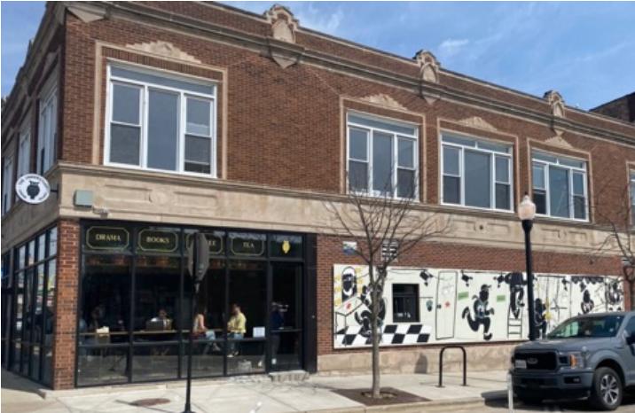
Andersonville is one of Chicago’s hippest neighborhoods, known for its boutiques, bookstores, and coffee shops. Why would anyone open a new café/bookstore in this already saturated neighborhood? Crawford and Fender, who studied acting and stage managing respectively, saw a combination café/ theater bookstore as filling a need in Chicago’s theater community. Skeptical at first about an Andersonville location, the pair were encouraged by the neighborhood Chamber of Commerce and others who understood the potential for creative customers. They also may have seen the slogan on the Jewel store across the street: “Anything is possible.”
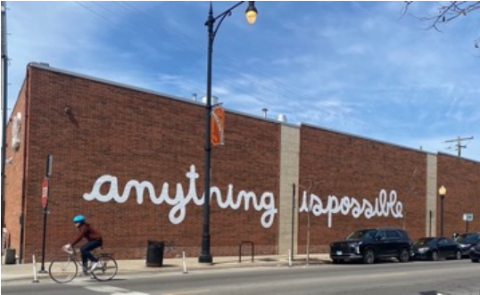
Open since the end of March, enthusiastic customers have exceeded Crawford’s and Fender’s expectations for a niche audience. “It’s been really wonderful. I keep saying it’s a testament to being a small business owner in Andersonville and also being part of the theater community; those are two groups that really show up for their community,” said Fender. Over 1000 books were sold in just the first week. “Our shelves were packed and suddenly started looking like Swiss cheese,” said Crawford.
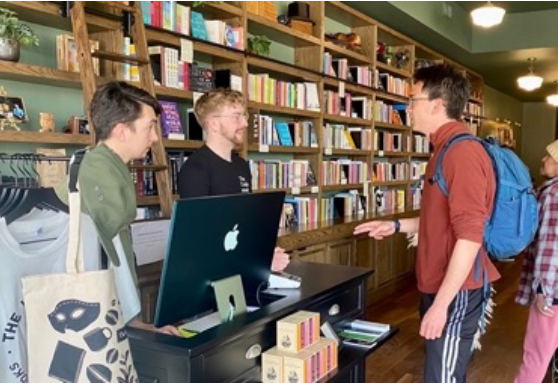
The Monday lunchtime crowd just two weeks after opening showed how varied the audience is. The tables in the corner window of the café were full, and the comfortable chairs on the bookstore half were taken; there was a line for coffee and pastries.
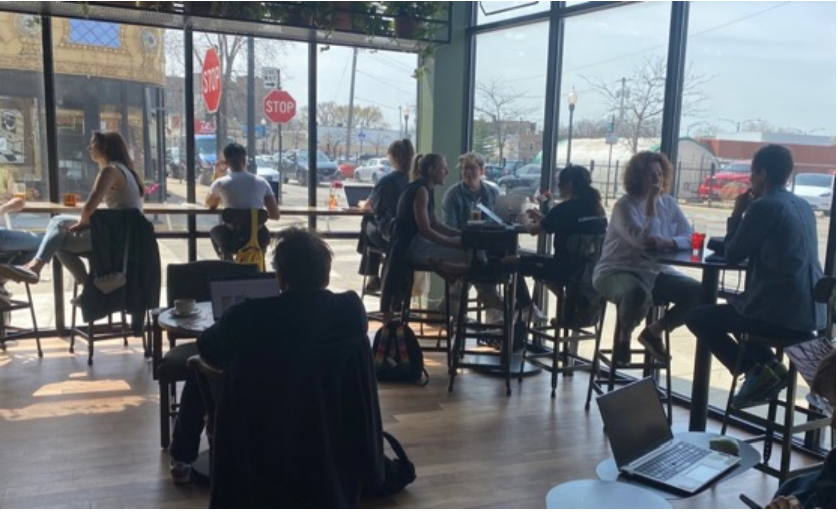
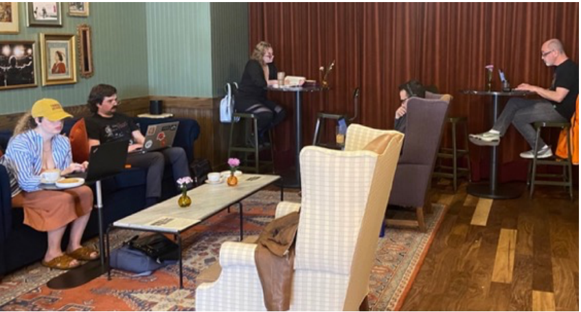
Frances Lampson, like many neighborhood residents, came for the environment. “I love coffee, so I’m always looking for new places in Andersonville. I also love the theatre even though I don’t participate…the atmosphere is great, the coffee is great, they’re really friendly and knowledgeable,” she said. “It’s so important that so many understand our vision and what we’re trying to create,” said Fender. “[One] of our regulars was…just telling me yesterday, ‘I’m not a theater person at all. I just love being in this space and love being around other creative people.’”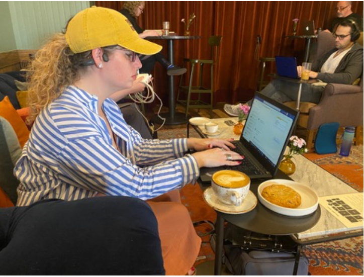
Emma Durbin, a playwright, has come here twice a week since opening. “I love plays and love how much the owners care about the community and care about emerging writers especially… Theater people don’t get that many special things, and to have just a space that’s not connected to an institution but that we can have community is very special,” said Durbin, “you get more [books] than just what’s popular.”
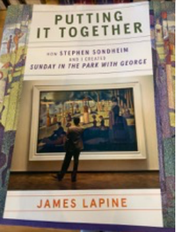 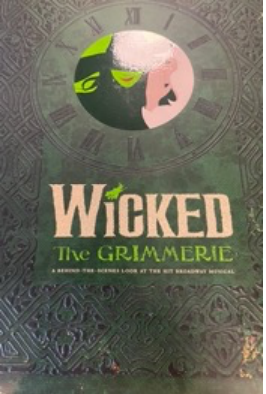 |
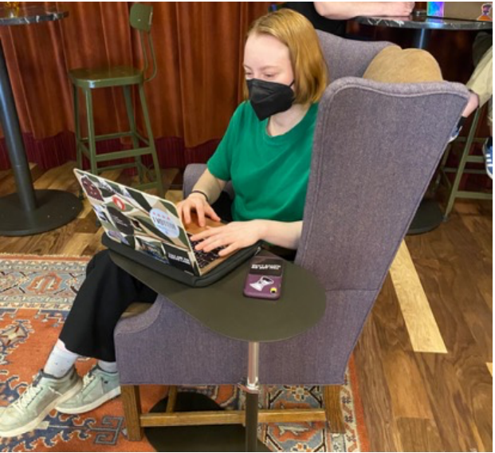 Emma Durbin, playwright |
Theater professionals particularly appreciate the carefully curated collection of books, scripts, and other theatrical materials. “Normally when you open a bookstore, you get sent a recommendation list that says what your opening inventory should look like. But because we’re so specialized, with the help of some curated lists and with the help of people giving us suggestions when they come into the door, we’ve been able to grow the inventory even more. We essentially handpick every single title,” said Crawford. The Understudy also carries secondhand books donated by friends and customers. There are some titles that students need for classes. “We’re always looking! We want to have different accessible price points for those titles…I like that used books are mixed in with the new books because it adds to the element of discovery,” said Fender.
Just three months in Chicago, living within a mile of The Understudy, Blake was attracted by the collection of theater books. “Better than I have ever seen,” he said. “I’ve spent quite a bit of money already. This is my third or fourth time here and I got my paycheck on Friday… I’m more of a theory nut…methodologies and histories and formations and structures – the conducting of theater practice.” Blake develops new projects while working in a friend’s business and exploring opportunities in academia. “I want to share access to high levels of craft and theater training and knowledge,” he explained.
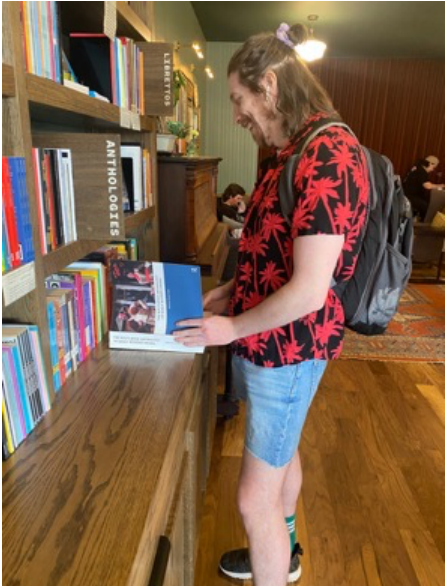 Blake explores the collection |
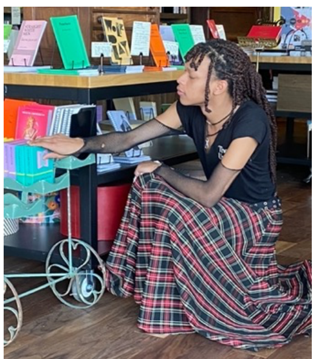 Staff member John Payne adjusts books |
Employees at The Understudy are as enthusiastic as the customers. John Payne, like many actors, needed a day job and was excited to hear about The Understudy opening. He appeared most recently in Botticelli in the Fire as Leonardo Da Vinci, and the director of that show alerted him to the job posting. “I immediately applied and met them and off the bat, I knew they would be great bosses, and this was going to be a really cool space… It’s very real and based on the idea of community…You [normally] walk into a bookshop and say, ‘Do you have any plays? And they say, yeah, we have three in the corner’ and two are A Midsummer’s Night Dream.’ It feels so good to be part of something people are excited about.” John is working on a site-specific production of Waiting for Godot and continuing to audition for new plays.
Crawford and Fender had hoped to open in July 2022, but city bureaucracy intervened. Permitting took much longer than anticipated, delaying the opening eight months. The delay bumped into another project the pair had to organize. “We were planning [our] wedding and
the store at the same time. I think working together on those big, enormous life events really allowed us to create a vocabulary with which to work with one another. Both were like doing a show together,” said Crawford. The wedding came off without a hitch. They are philosophical
about the delay, noting that they had more time to select cutting edge coffee equipment, learn more about sustainable coffee culture, and fine tune the store design, which they want to reflect historical refences in a fun and lively manner. The look of the Understudy is inspired by
the late 19th century Arts and Crafts style with industrial finishes to reflect both the glamour of theater and the hard work that goes into making theater art. The arch separating the café from the bookstore, for example, is enhanced with custom, locally printed wallpaper influenced by 19th century artist William Morris, whose design decorates the store’s bookmarks. The Café features whimsical tiled flooring; theatrical artifacts line the tops of the bookshelves. The hall to the restrooms is papered with pages of script, and the ladies restroom has a dressing roomworthy lighted mirror.
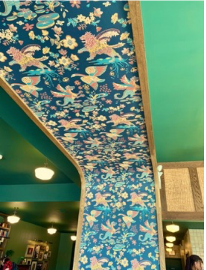 Archway custom wall paper |
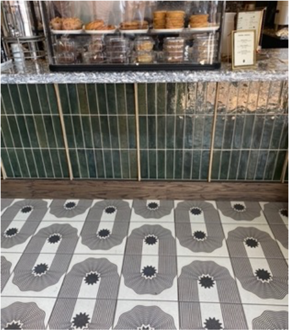 Café floor tile |
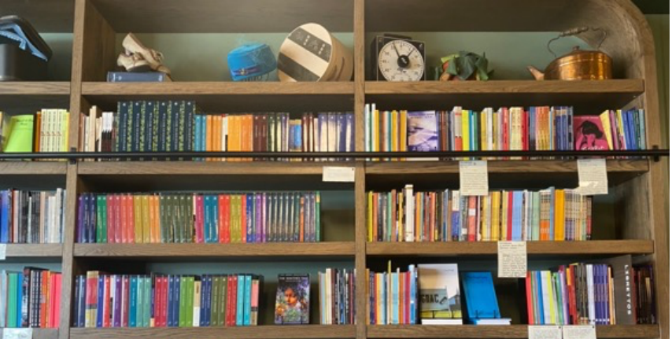
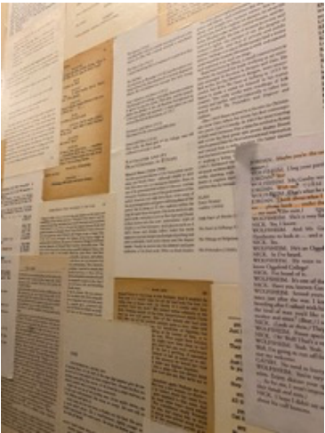 Hallway papered with scripts |
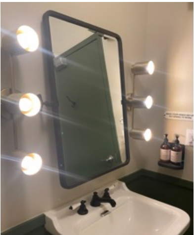 Ladies room mirror |
Crawford and Fender have discovered a new group of clients every weekday day around 8:30 a.m. and 3:30 p.m., thanks to its proximity to the Pierce Elementary School. Parents drop their children at school and fill the café for morning coffee. Families stop on their way home for after-school snacks. The Understudy is fulfilling its goal as a gathering place for people of all ages and professions who care about storytelling, the idea that links the bookstore with the café.
The story behind the creation of a theatrical production is seen as worthy of honoring as the story of the sustainable and when possible local products used in the café, like the direct trade Metric coffee and the coffee mugs made by local potter Craighton Berman. Pastries come from Phlour, a neighborhood family bakery around the corner on Bryn Mawr Avenue. The charming mural on the side of the building was painted by Chicago muralist Joe Kraft; even the plants in the window come from the nearby Gethsemane Gardens in Andersonville. “We celebrate the hard work it takes to make beautiful things happen…it’s the story of whose hands did this pass through to get to you,” said Crawford. Many hands are at work at the Understudy, and they don’t need a star to call in sick to perform.
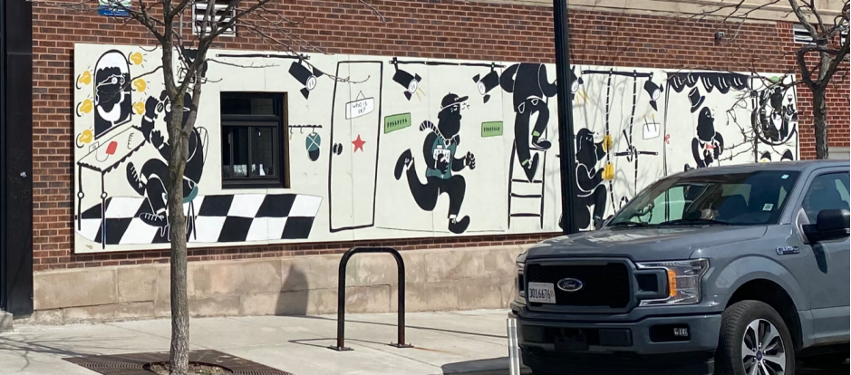
M